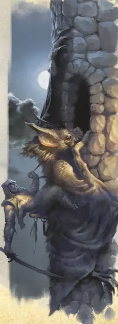

Орк красный клык Шаргааса
Orc Red Fang of Shargaas
Средний Гуманоид (Орк), хаотично-злой

Класс Доспеха 15 (проклепанная кожа)
Хиты 52 (8к8 + 16)
Скорость 30 футов
| мод | спас | ||
|---|---|---|---|
| СИЛ | 11 | +0 | +0 |
| ЛОВ | 16 | +3 | +3 |
| ТЕЛ | 15 | +2 | +2 |
| мод | спас | ||
|---|---|---|---|
| ИНТ | 9 | −1 | −1 |
| МДР | 11 | +0 | +0 |
| ХАР | 9 | −1 | −1 |
Навыки Восприятие +2, Запугивание +1, Скрытность +5
Чувства тёмное зрение 60 футов, пассивное Восприятие 12
Языки Общий, Орочий
Опасность 3 (700 опыта)
Бонус мастерства +2
Среда обитания Город, Горы, Лес, Подземье, Холмы
Особенности
Хитрое действие. . В каждый свой ход орк может использовать действие Рывок, Отход или Засада бонусным действием.
Рука Шаргааса. . Орк наносит 2 дополнительных кости урона, когда попадает по цели атакой оружием (включено в его атаки).
Зрение Шаргааса. . Магическая тьма не препятствует тёмному зрению орка.
Убийца. В первый раунд боя орк имеет преимущество на броски на попадание по любому существу, которое ещё не ходило. Если в этот раунд орк попадает по существу, которое застали врасплох, то это попадание автоматически считается критическим.
Действия
Мультиатака. Орк совершает две атаки скимитаром или дротиком.
Скимитар. . Рукопашная атака оружием: +5 к попаданию, досягаемость 5 футов, одна цель. Попадание: 13 (3к6 + 3) рубящего урона.
Дротик. . Дальнобойная атака оружием: +5 к попаданию, дистанция 20/60 футов, одна цель. Попадание: 10 (3к4 + 3) колющего урона.
Вуаль Шаргааса (Перезаряжается после короткого или продолжительного отдыха). Орк накладывает заклинание тьма [darkness] без использования любых компонентов. Базовая характеристика – Мудрость.
Описание
Шаргаас – это орочье божество глубокой тьмы и скрытности, бог убийца, который ненавидит все живое, кроме орков. Орки считают Шаргааса божеством, подходящим для отверженных и слабаков, неподходящих для существенных ролей в племени. Эти неудачники живут в самых отдаленных и глубоких частях владений племени.
Ассассины и воры – элита среди последователей Шаргааса, которые входят в культ Красного Клыка. Они совершают убийства, скрытные нападения и другие тайные операции для племени. Они полагаются на смесь усиленных тренировок и магии, дарованной им Шаргаасом.
Большинство анклавов Красных Клыков держат и воспитывают гигантских летучих мышей, которые считаются священными для Шаргааса. Красные Клыки седлают их в бою или во время скрытных нападений и убийств на вражеской территории.
См. дополнительно статью: "Бестиарий: Орки"